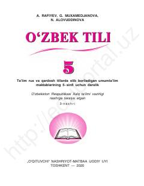

5ORus va qardosh tillarda ta'lim oluvchi 5-sinflar uchun o'zbek tili darsligi.
Mazkur darslik ta'lim rus va qardosh tillarda olib boriladigan umumta'lim maktablarining 5-sinfi uchun mo'ljallangan bo'lib, o'zbek tilini o'rganish bo'yicha boshlang'ich qoidalar, mashqlar va matnlarni o'z ichiga oladi. Kitob o'quvchilarning og'zaki va yozma nutq ko'nikmalarini rivojlantirishga xizmat qiladi.